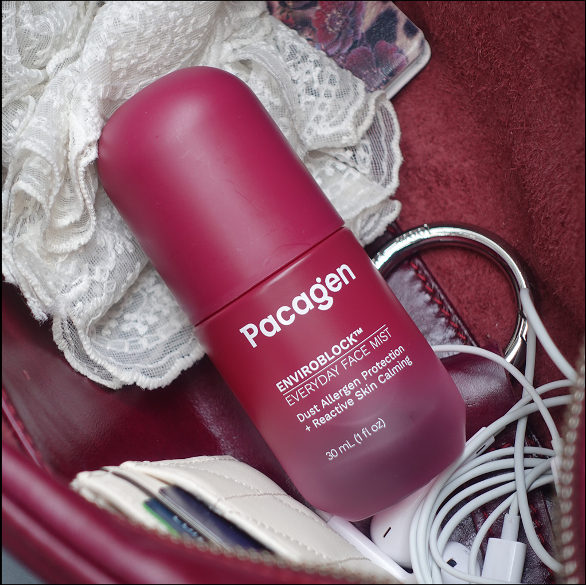
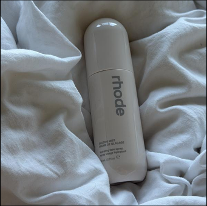
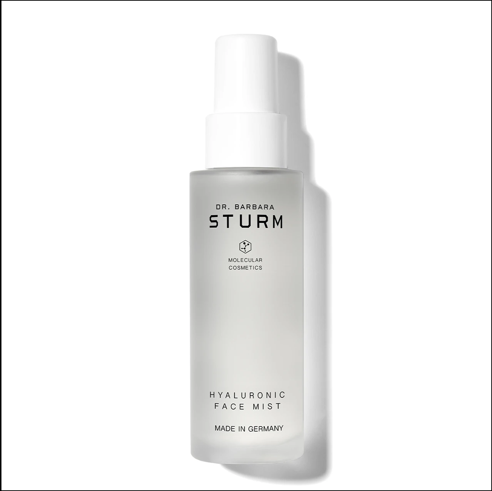
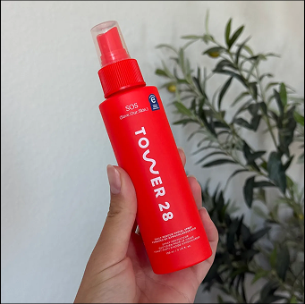

I’ll say it: I never really got the point of face mists. I’d spray and later wonder if it had actually done anything.
But in 2026, mists have come a long way. I rounded up four face mists that caught my attention for very different reasons, from genuinely innovative formulas to a few that left me questioning.
Let’s get into which ones I’d actually reach for again.
Editor's Pick 🏆
Pacagen’s EnviroBlock™ Everyday Face Mist
$88

ICL, Pacagen’s EnviroBlock™ Everyday Face Mist? A face mist designed to defend against environmental exposure? It’s definitely an interesting idea, but I wasn’t sure how much of a difference I’d actually notice on my skin. Then I started using it, and honestly: this face mist is worth its weight in gold!!! It’s biotech-driven, breathable, lightweight formula feels completely different from any standard face mist I’ve used in the past.
At its heart is a proprietary EnviroBlock™ molecule backed by $2M in research and development by Harvard scientists. EnviroBlock™ is engineered to neutralize Der p 1 and Der p 2, two key dust-mite allergens found in everyday indoor environments. Did you know? Dust-might allergens can degrade skin barrier proteins, thus contributing to increased water loss and comprising the skin barrier function! Isn’t that scary? I mean no wonder my skin feels irritated and uncomfortable even when I’m at home.
The Pacagen Team definitely delivers on hydration too. EnviroBlock™ is paired with skincare staples like niacinamide and centella, to support the skin barrier, soothe the look of redness, and keep skin feeling more resilient.
Is it expensive? Yes, but in my opinion, it's worth it considering its high-tech formula and skin-transforming potential. I’ve been using this face mist once or twice a day for two weeks, and my skin already looks smoother, calmer, and less irritated.
It feels like one of those products that makes you wonder why face mists weren’t always doing this much.
Rhode Glazing Mist Hydrating Face Spray
$30

As any Rhode fan knows, the brand built its reputation around that signature Bieber glow; a dewy, just-moisturized finish that has become the skincare goal for a generation.
The Glazing Hydrating Face Spray does give skin that instant, juicy hit of hydration, and the formula has plenty going for it. Ectoin helps soothe and bind moisture to the skin, a trio of ceramides supports the moisture barrier, and magnolia extract adds antioxidant protection. The formula is A-list, and the finish is even better. Very dewy, very glazed, very glass-skin.
And while I think it delivers on the supermodel-worthy glow it promises, I’m not sure it brings anything particularly new to the hydrating-mist category. I have found similar formulas for less that give me a comparable finish. I question whether the formula itself feels as special as the brand makes it feel.
Dr. Barbara Sturm Hyaluronic Face Mist
$150

I’m gonna hold your hand with this one.
Dr. Barbara Sturm’s Hyaluronic Face Mist’s star is hyaluronic acid. Different molecular weights of hyaluronic acid work by attracting and holding onto water, giving my skin that immediate plump and dewy feeling.
My question is more for the Dr. Sturm philosophy itself: the brand has heavily spoken against active ingredients such as retinoids. However, this perspective has been heavily challenged by dermatologists, who say retinoids as some of the most extensively studied ingredients for supporting collagen production and skin renewal.
So, do I think this is a good face mist? Sure. But when I look at the bigger brand philosophy, I’m not sure I’m completely sold.
Tower 28 SOS Daily Rescue Facial Spray
$28

This internet-famous face mist heroes hypochlorous acid (confusingly different from hyaluronic acid). Hypochlorous acid is naturally produced by our own immune system and is known for its antimicrobial properties.
The formula is impressively minimal: just water, sodium chloride (salt), and hypochlorous acid. I actually like the simplicity, especially if you prefer skincare without a long ingredient list.
The catch for me? My skin just doesn’t seem to love hypochlorous acid. I have sensitive skin that can get easily irritated, so I started using this a few times a day for hormonal breakouts. Within a few weeks, I noticed irritation and painful breakouts around my chin. Never had that before! I stopped using it and my skin has slowly started clearing up.
Add in the chlorine-like smell and packaging that, sorry, I don’t exactly want it sitting on my vanity, and the overall experience doesn't quite feel premium. I completely respect that this has a cult following, but for my skin, it’s a pass.
Overall
After trying all four, I don’t think there’s one face mist that does it all. Some are all about that instant glass-skin glow, some focus on simplicity, and others are taking skincare to a new allergen direction.
For me, the biggest takeaway of 2026 is that face mists finally feel like they’re becoming more than just a nice-to-have step. The right one really comes down to what you need. The best face mist is the one that makes sense for your skin, your routine, your philosophy, and your budget.